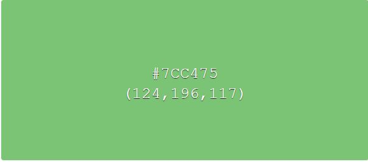
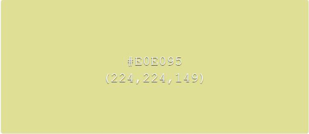
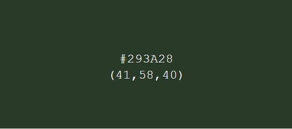
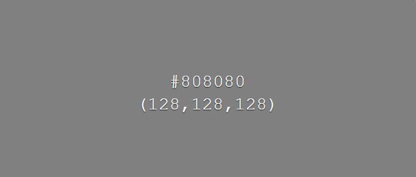

Process Page
Research Phase
Audit
One of the problems with the current layout is the navigation. For one thing it doesn't have a different option for mobile devices. It also has the problem of causing the main text to move when the dropdown is out. To fix these problems I enabled a hamburger menu for mobile devices and simplified the navigation by getting rid of the dropdown and moving contact to the bottom of every page.
Another Problem with the website is that it has two different background pictures that it uses which can be a lot to look at. To fix this I removed the background picture from the main to make it easier to read what is being said. However, while the body background image isn't there, that's because I couldn't get access to it not because I think it should be removed.
Site Map
Design Brief
Initial Design Process
Style Tiles
First Style Tile:
Primary Colors used in the Website:
- 

- 
- 
Button Hover Color
- 
Revised Style Tile:
Primary Colors used in the Website: